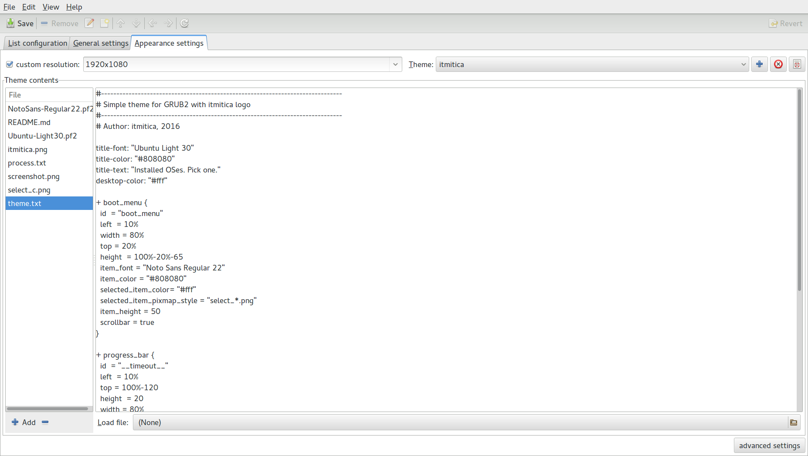
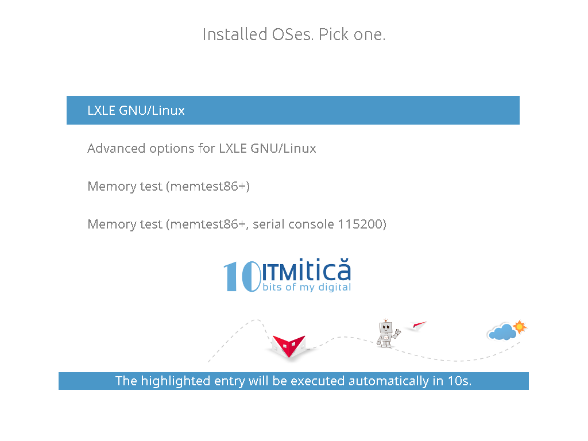

GRUB theme
Build your own GRUB theme in a few easy steps.
Tools
Grub Customizer
A fantastic tool. Instead of individually manage the config files:
/etc/default/grub/boot/grub2/custom.cfg/boot/grub2/themes/itmitica/theme.txt
os-prober and grub-update for us.
grub-mkfont
This command line tool enables us the use of our favorite fonts for the GRUB theme.
Inkscape
Optionally, use a graphics editor to create artwork and logos to personalize or add branding to the GRUB theme.
Process
Create a theme directory, /boot/grub2/themes/itmitica for example.
Use Grub Customizer to change the resolution, to add font files and image files to the theme, on the Appearance Settings tab.

Edit the theme.txt file. The sections I added are:
- for title and desktop
- for the boot menu
- for the progress bar
- for the logo
Links and screenshots
